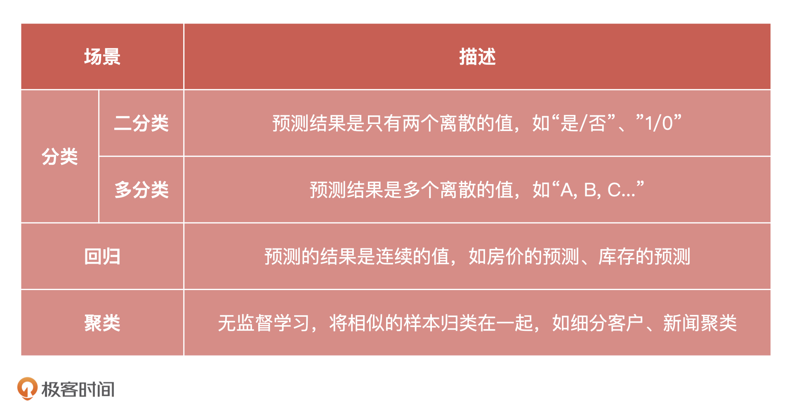
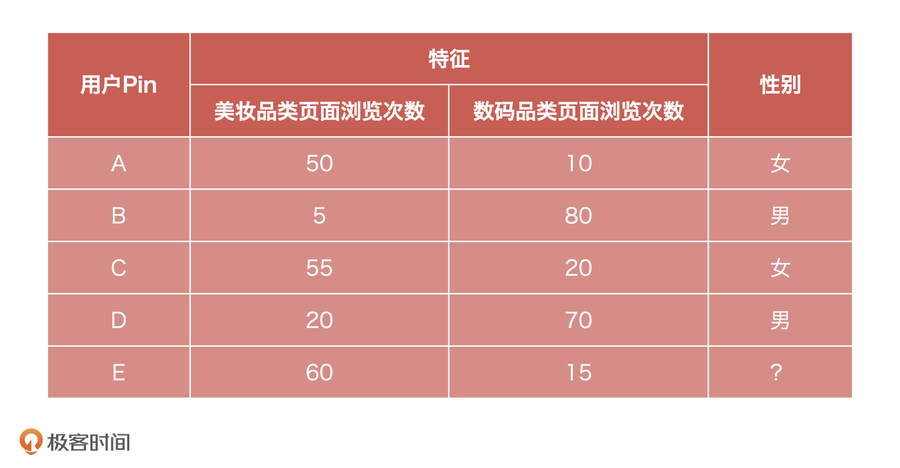
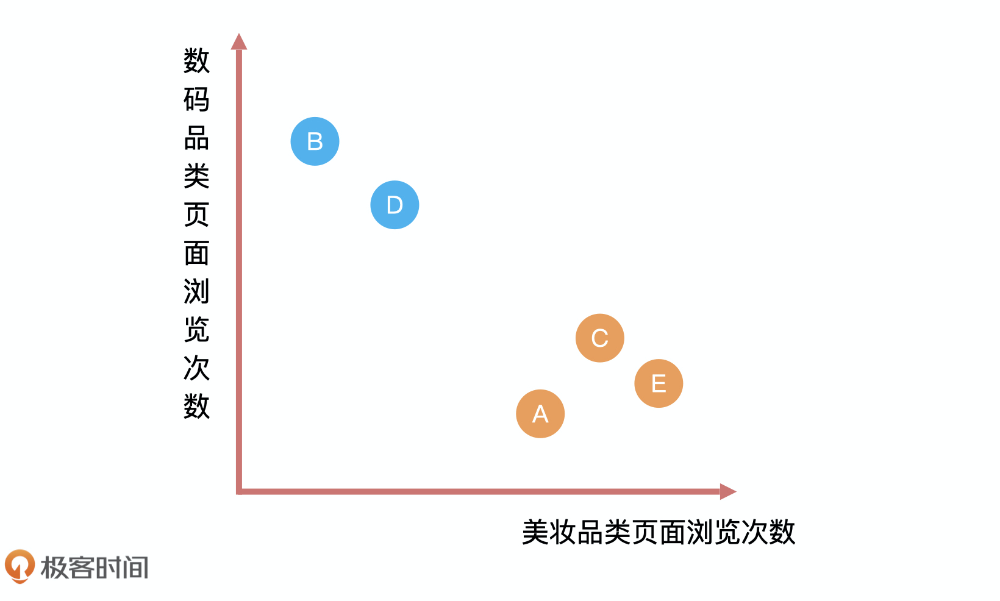
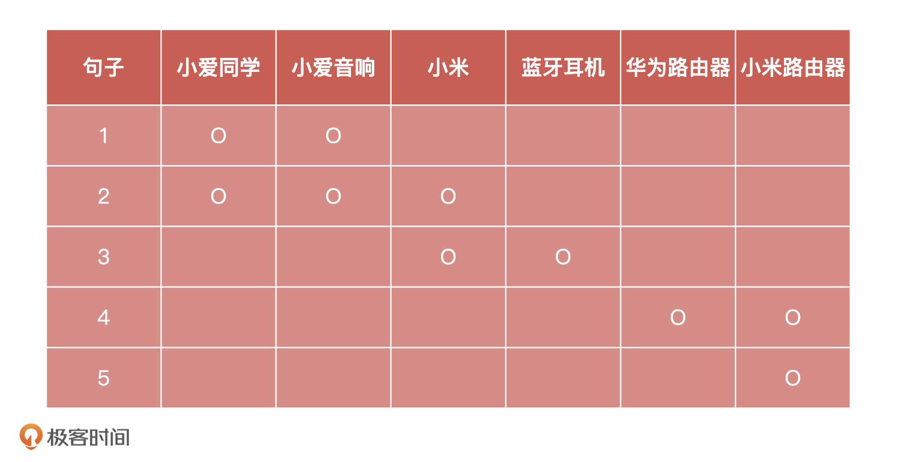
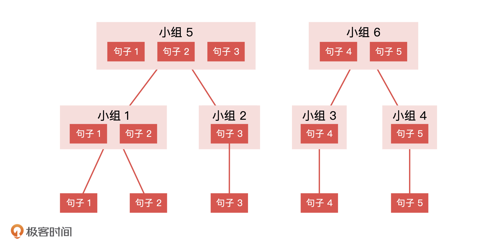
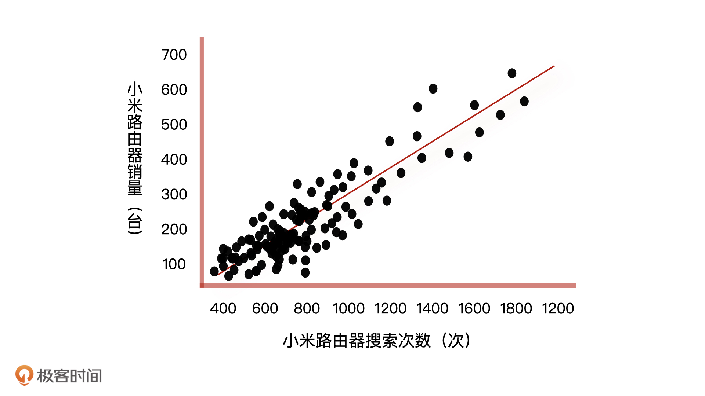
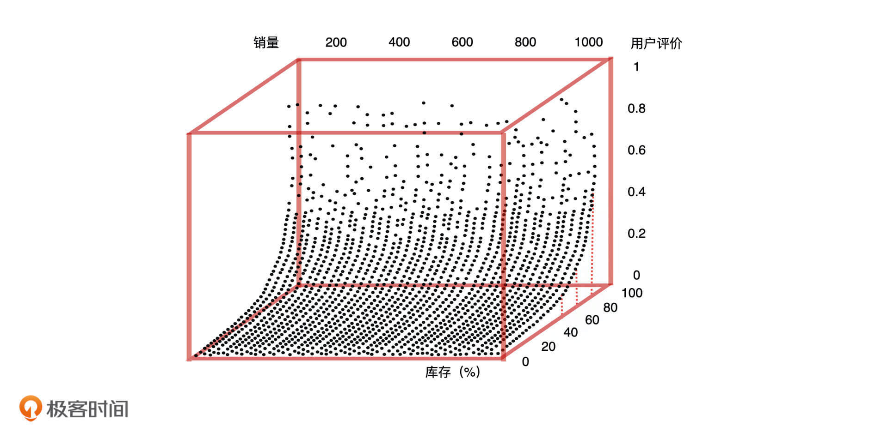

- 00 开篇词 你好，产品经理！你的未来价值壁垒在哪儿？.md
- 01 行业视角：产品经理眼中的人工智能.md
- 02 个人视角：成为AI产品经理，要先搞定这两个问题.md
- 03 技术视角：AI产品经理需要懂的技术全景图.md
- 04 过来人讲：成为AI产品经理的两条路径.md
- 05 通过一个 AI 产品的落地，掌握产品经理工作全流程.md
- 06 AI 模型的构建过程是怎样的？（上）.md
- 07 AI模型的构建过程是怎样的（下）.md
- 08 算法全景图：AI产品经理必须要懂的算法有哪些？.md
- 09 K近邻算法：机器学习入门必学算法.md
- 10 线性回归：教你预测，投放多少广告带来的收益最大.md
- 11 逻辑回归：如何预测用户是否会购买商品？.md
- 12 朴素贝叶斯：让AI告诉你，航班延误险该不该买？.md
- 13 决策树与随机森林：如何预测用户会不会违约？.md
- 14 支持向量机：怎么预测股票市场的涨与跌？.md
- 15 K-means 聚类算法：如何挖掘高价值用户？.md
- 16 深度学习：当今最火的机器学习技术，你一定要知道.md
- 17 模型评估：从一个失控的项目看优秀的产品经理如何评估AI模型？.md
- 18 核心技能：产品经理评估模型需要关注哪些指标？.md
- 19 模型性能评估（一）：从信用评分产品看什么是混淆矩阵？.md
- 20 模型性能评估（二）：从信用评分产品看什么是KS、AUC？.md
- 21 模型性能评估（三）：从股价预测产品看回归算法常用的评估指标.md
- 22 模型稳定性评估：如何用PSI来评估信用评分产品的稳定性？.md
- 23 模型监控：产品经理如何建设算法模型监控指标体系？.md
- 24 推荐类产品（一）：推荐系统产品经理的工作职责与必备技能.md
- 25 推荐类产品（二）：从0打造电商个性化推荐系统产品.md
- 26 预测类产品（一）：用户复购意向预测的底层逻辑是什么？.md
- 27 预测类产品（二）：从0打造一款预测用户复购意向的产品.md
- 28 预测类产品（三）：从0打造一款“大白信用评分产品”.md
- 29 自然语言处理产品：从0打造一款智能客服产品.md
- 30 AI产品经理，你该如何提升自己的价值？.md
- 31 AI产品经理面试，这些问题你必须会答！.md
- 春节加餐1 用户增长模型：怎么利用AI技术判断新渠道性价比？.md
- 春节加餐2 一次答疑，带你回顾模型评估的所有基础概念.md
- 期中周测试题 ，你做对了吗？.md
- 期中答疑 AI产品经理热门问题答疑合集.md
- 结束语 唯一不变的，就是变化本身！.md
08 算法全景图：AI产品经理必须要懂的算法有哪些？
你好，我是海丰。
从今天开始，我们正式进入算法技术能力篇的学习。在正式开始学习之前，我想先给你讲一个我亲身经历过的小故事。
我最开始做 AI 项目的时候，碰到过一个预测员工离职可能性的产品需求。当时，因为我对算法技术不熟悉，所以我只告诉算法工程师，我们要做一个预测员工离职的模型。因此，算法同学按照自己的理解，把它做成了一个预测员工可能离职的排序，而不是离职的概率。
很显然，这个模型和业务方的原始诉求是有出入的。但是，当我去说服算法工程师修改模型的时候，却被他说“你自己先搞清楚算法能做什么、不能做什么，再来和我谈”。后来我才知道，他的模型是按照回归的方式做的，得到的结果是未来预计离职的天数，最后自然是按照天数来做排序。
这件事也让我下定决定去学习算法技术，不说要学得多么精通，至少要知道常用算法的实现逻辑和应用场景，这也是我在算法技术能力篇要给你讲的。这样一来，当你和算法同学协作的时候，能够减少很多沟通成本，知道如何给算法工程师提需求，能和他们同频沟通，就算是要对模型结果进行争执，也能更有底气。
机器学习分类
这节课，我会先带你从宏观上了解目前机器学习的三大类应用场景，分别是分类问题、回归问题、聚类问题，以及怎么用相关算法来处理这些问题，最后帮你梳理一张 AI 产品经理需要掌握的算法技术全景图。这样，我们后面再去学习具体的算法，就能有一个更清晰的学习路径了。
这里，我先把分类、聚类和回归问题的定义总结在了下面的表格里，你可以先看看，对它们有个整体印象。

有了印象之后，我们再结合具体的例子，来讲讲这些场景问题是怎么用相关算法解决的。
处理分类问题的算法
在实际工作中，我们遇到最多的问题就是分类问题，分类问题经常出现在分类判断、标签预测、行为预测这些场景中。
比如说，你现在是一个电商产品经理，有商城全部用户的历史行为数据，以及用户A、B、C、D的性别数据，希望预测商城其他用户的性别，可能是用户E。

这就是一个很经典的分类问题，这个问题的预测结果就是男性或者女性。像这种判断一个事情的结果是“男/女”、“是/否”、“1/0”的问题就是二分类问题。
不过，如果我把已知条件变换一下：你现在有商城全部用户的历史行为数据，以及用户A、B、C、D的婚姻状况数据，希望预测商城其他用户的婚姻状况。这个时候，预测的结果就是未婚、已婚或者是离异了，像这种预测结果是多种情况的，就是多分类问题。
那分类问题怎么解决呢？我们再回到刚才这个例子中。结合上面的表格，我们可以看到，已知性别的用户会呈现出来一种规律，就是女性浏览美妆品类次数远高于浏览数码类页面次数，而男性会呈现出相反的趋势。

我们可以把性别和浏览页面次数呈现到一个图里，然后将用户浏览美妆品类页面，数码品类页面次数录入。这个时候，你会发现用户 E 和用户 A、C 离得很近，从数学的角度来看，距离越近就越相似，所以我们大概率认为 E 的性别应该和 A、C 一样，是女性。这就是分类问题的解决过程。
在机器学习的场景中，分类算法解决分类问题也是利用相似的原理，可用的算法非常多，常见的有逻辑回归、朴素贝叶斯、决策树、随机森林、K 近邻、支持向量机，以及神经网络等等。
总的来说，使用分类算法解决问题，我们必须要有已知的训练数据，才能对未知数据进行预测。当已知信息缺失的时候，我们又该怎么办呢？这个时候，我们要么考虑通过人工打标来处理数据，要么考虑使用聚类算法。这就是我接下来要讲的聚类问题的处理逻辑了。
处理聚类问题的算法
在机器学习中，我们经常需要给一些数据量很大，用户属性很多的用户数据进行分组，但往往很难下手。
我还是代入一个例子来给你讲讲，假设，你现在是一个客服系统负责人，为了减轻人工客服的压力，想把一部分常见的问题交给机器人来回复。解决这件事情的前提，就是我们要对用户咨询的商品问题先进行分组，找到用户最关心的那些问题。
这种需要根据用户的特点或行为数据，对用户进行分组，让组内数据尽可能相似的的问题，就属于聚类问题，用一个词概括它的特点就是 “物以类聚”。常见的聚类算法有层次聚类、原型聚类（K-means）、密度聚类（DBSCAN）。
那聚类问题该怎么解决呢？我们接着刚才的例子来说，假设我们现在有5条如下的咨询：
- 小爱同学和小爱音响有什么区别 ？
- 小爱同学和小爱音响都是小米的吗 ？
- 小米的蓝牙耳机怎么连接 ？
- 华为路由器和小米路由器哪个可以在校园网内使用 ？
- 一定要小米路由器才能用吗 ？
如果我们把每句话都看成单独的小组，这一共就是5个小组，那我们的目标就是把相似的问题合并成一个小组。最简单的办法，就是找出每个小组中的名词，把“各句中包含的名词一致的数量”看作“相似度”。这样一来，相同名词数量最多的两个句子就是最相似的。
按照这个思路，我把这 5 个句子中含有的名词都整理到了下面的表中，并用 “O” 进行了标记。

这样，我们就能算出每一个句子和其他4句之间的相似度了。
- “句子 1”和“句子 2、3、4、5”的相似度分别是 2、0、0、0。
- “句子 2”和“句子 3、4、5”的相似度是 1、0、0。
- “句子 3”和“句子 4、5”的相似度是 0、0。
- “句子 4”和“句子 5”的相似度是 1。
这样，我们也就能得出：最相似的小组是相似度为 2 的“句子 1”和“句子 2”，我们把这两个句子合并之后，5 个小组就变成了 4 个小组：
- “小组 1”：“句子 1”和“句子 2”
- “小组 2”：“句子 3”
- “小组 3”：“句子 4”
- “小组 4”：“句子 5”
然后，我们再按照上面同样的方式把新生成的各小组进行聚类，就又会得到两个相似度为 1 的小组：
- “小组 5”：“句子 1” 、“句子 2”和“句子 3”
- “小组 6”：“句子 4”和“句子 5”
就这样，当我们把所有相似的句子聚类到一起，就完成了聚类的过程。其实，聚类算法的原理很简单，就是根据样本之间的距离把距离相近的聚在一起。刚才，我是通过句子中的名词是否相同来衡量距离的，那在实际应用场景里，衡量样本之间距离关系的方法会更复杂，可能会用语义相似度、情感相似度等等。
同时，这个聚类的过程可以表示成带有层次的树形结构图，这就是层次聚类算法的原理也是它名字的由来。这种聚类方式可以是“自底向上”的聚合策略，也可以是“自顶向下”的分拆策略 。

总之，聚类算法解决问题的核心思想就是“物以类聚，人以群分”，所以，聚类分析较为重要的一个应用就是用户画像。
我们刚才说了，分类问题和聚类问题的差异在于分类问题需要根据已知的数据去学习，然后为新的数据进行预测，而聚类分析直接在已有数据中发现联系。但它们还存在着一个共同点，那就是它们都输出的是 “0” 或 “1” 这种离散型的标签。
离散型的标签指的就是非连续的一个个单独的标签。比如说，一个人的年收入可能是从几万到几千万这样的连续性值，但是如果我们将年收入的具体数值转化成低收入、中等收入、高收入、超高收入这些档，每一个档就是一个离散型的标签。
但有时候，我们在项目中确实需要预测一个具体的连续性数值，比如酒店的价格或股票的价格。遇到这类问题我们该怎么办呢？这个时候，我们就可以通过解决回归问题的算法来实现了。
处理回归问题的算法
在实际工作中，我们也经常会遇到回归问题，比如需要预测某个商品未来的销量，预测某只股票未来的价格等等。
下面我就通过一个预测销量调整库存的例子，来讲讲回归算法中线性回归的解题过程。
有这样的一个场景，你是一个电商产品经理，你们公司每件商品的库存都是通过预测未来产品的销量来动态调整的。这个功能的实现方式是，先根据商城 App 分析出用户的商品搜索次数，然后将每个商品的搜索次数和销量做数据分析，画出一个横轴为搜索次数，纵轴为销量的二维散点图。

我们以搜索小米路由器举例，从上图我们可以看到，相对密集的搜索次数都在1000次以下，当搜索次数超过1000次以后，散点变得稀疏起来。这样一来，我们就能根据数据拟合出一条回归直线。
这条回归直线上，因为销量和搜索次数成正比，所以它们都可以用一元回归方程来表示。如果我们假设影响销量的因素只有搜索次数这一个特征，那么在有了新产品和它的搜索次数之后，我们根据一元回归方程，就可以预测出新产品的销量了。
这个时候有的同学可能想说，“用户搜索次数虽然会影响销量，但我认为用户评价和库存也会影响销量啊”。接下来，我们就一起来验证一下这个假设。我们将库存、用户评价作为影响销量的两个因素，去分析它们之间的关系。

如上图所示，当库存小于 40% 的时候，用户评价和销量都很低，当库存大于 80% 的时候，用户评价和销量呈线性增长。我们发现，用户评价和库存共同影响了产品销量，只有当库存大于 80% 且用户评价高于 0.6 的时候，产品才有较好的销量。因此，这三者之间的关系可以用二元回归方程进行量化。
当然，实际情况是像服务态度、物流时间、折扣力度、广告宣传、购物体验这些因素，它们也会或多或少地影响销量。我们可以把这些因素也就是n个特征，都总结到同一个回归方程中，用多元回归方程表示，具体的公式如下：
\[- \\text { 销量 }=a\_{0}+a\_{1} \* \\text { 搜索次数 }+a\_{2} \* \\text { 用户评价 }+a\_{3} \* \\text { 库存 }+a\_{4} \* \\text { 折扣力度 }+\\cdots a\_{n} \* \\text { 广告宣传 }- \]
通过这样的方式，我们就可以轻易地预测每种产品的未来销售，进而可以动态地规划库存和物流。当然，回归算法能做的还有很多，比如预测不同促销组合产生的盈利进而确定促销活动，预测广告的投入量进而估算盈利额等等。
对于产品经理来说，我们需要清楚的知道线性回归的原理，熟悉回归算法能解决的情况，比如它适合用来预测价格、销量，这类结果是连续值的问题。
总结
今天，我结合三大类问题，给你讲了三大类常见算法和它们的应用场景。为了方便你的记忆，我把重点内容整理成了一张知识脑图，你可以去文稿中看一看，这里我就不重复了。

这里，我还想结合这三类算法，再给你举几个常见的应用场景，因为知道什么场景下使用什么算法来解决是我们最需要掌握的。
如果你希望知道你的用户会不会购买某个商品，你的用户在你们平台借款之后会不会不还钱，或者你想知道你的用户会不会购买你们平台的会员卡，这些就属于分类问题了，你们的算法工程师可能会选择逻辑回归，决策树来实现你的需求。
如果你希望知道你们平台某个商品未来的价格，预测你们小区未来某个时间点的房价，或者预测一下你的用户收入情况是多少，你们的算法工程师可能会选择使用回归算法来解决这些回归问题。
如果你想做一个用户画像体系，对用户进行分组打标签，这就属于聚类分析的领域了，你们算法工程师可以选择层次聚类，原型聚类等算法来实现你的需求。
当然，算法分类的方式不止一种，我们也可以按照建模时候有没有标签，把它们分成有监督、无监督和半监督算法。我之所以选择根据应用场景来分类，是因为你作为一个产品经理，应该关注的是，如何通过技术（算法）来解决业务场景中遇到的问题。
课后讨论
如果我们要做一个预测用户未来能不能复购的模型，你觉得这属于什么问题，哪种算法可以解决呢？
期待在留言区看到你的设计和思考，我们下节课见！
© 2019 - 2023 Liangliang Lee. Powered by gin and hexo-theme-book.